康軒 自然科學 四上。期中考只考第一單元 地表的靜與動、第二單元 水生生物與環境（課本 p.10–71），預設只顯示這兩個單元。第三、四單元留給下次段考，按「全冊」就看得到。
黃色底＝重點 ⚠＝容易弄錯 「課堂補充」＝老師講義和上課筆記
| 活動 | 要回答的問題 | 關鍵字 |
|---|---|---|
| 1 地表物質有什麼 | 地表上有什麼？岩石、沙、土壤哪裡不一樣？ | 生物、非生物、顆粒大小 |
| 2 地表環境會變動嗎 | 什麼會改變地表？人類做了什麼？ | 風、流水、人類開發、水土保持 |
| 3 怎樣做好地震防災 | 地震會造成什麼？平時、發生時、發生後要做什麼？ | 九二一、地震報告、震度、防災 |
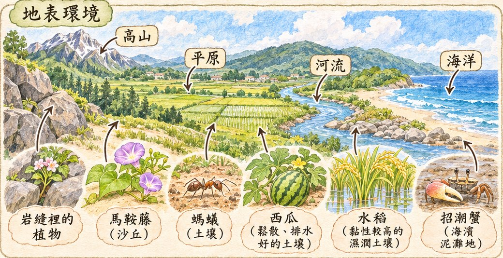
地表上有高山、平原、河流、海洋等環境。地表上除了生物之外，還有非生物，例如空氣、水和岩石。
生存在地表的生物必須依靠空氣和水才能生存；有些生物只適合生存在特定的環境。
| 生物 | 適合的環境 |
|---|---|
| 植物 | 岩縫裡長出植物 |
| 植物（馬鞍藤） | 沙丘上匍匐生長 |
| 螞蟻 | 土壤裡有蟻窩 |
| 西瓜 | 適合種在鬆散、排水性好的土壤（沙地） |
| 水稻 | 在有點黏性的溼潤土壤，才長得好 |
| 栗喉蜂虎（鳥） | 在陡峭的土丘鑽洞棲息 |
| 招潮蟹 | 棲息在鬆軟的海濱泥灘地 |
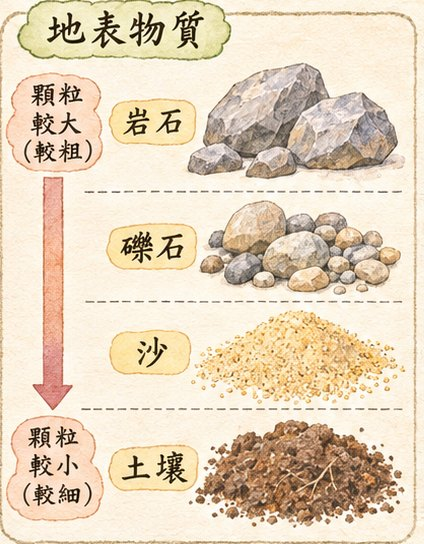
地表的岩石、沙和土壤是大部分生物生存的場所。岩石碎裂成礫石，礫石顆粒最大、摸起來粗粗的；土壤顆粒最小、摸起來細細的。
| 生活中的應用 | 用到什麼 |
|---|---|
| 堅硬的岩塊鋪設步道 | 岩石 |
| 岩石切割後蓋房子 | 岩石 |
| 肥沃的土壤讓農作物生長良好 | 土壤 |
在不同時間觀察相同地方，地表環境會變得不一樣。
① 把礫石、沙和土壤混合，在容器中堆成土堆 → ② 從土堆上方澆水 → ③ 觀察並記錄。
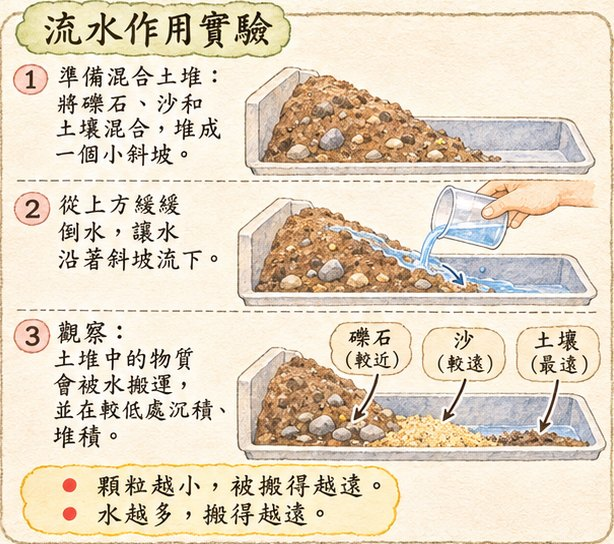
結論：流水會把地表物質搬到其他地方堆起來。顆粒越小的物質，被搬得越遠；流水作用越強（水越多），被搬得越遠。地表產生新樣貌後，會暫時趨於穩定。
對著土堆搧風也一樣：風和流水一樣，都會使地表物質移動。
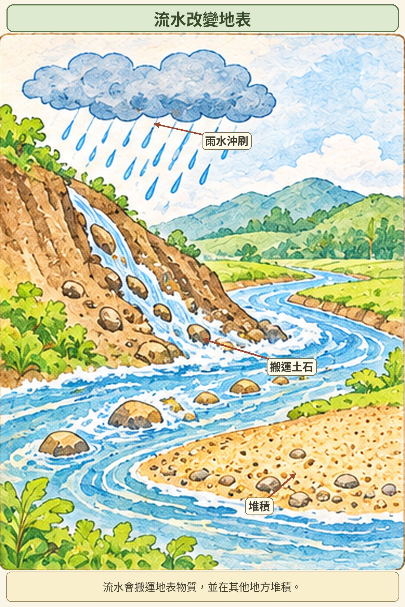
| 人類行為 | 造成的影響 | 保護的做法 |
|---|---|---|
| 過度開發森林（砍伐） | 下大雨後容易發生土石流 | 避免砍伐森林，維持森林的完整性 |
| 開闢山坡地種蔬菜 | 下大雨時雨水把土壤沖進河裡，河水變黃濁 | 裸露的山坡地種植植物，避免地表物質持續流失 |
| 在河川地開挖砂石 | 河道改變，周圍環境受影響 | 整治河川，防止河床、河岸持續受河水沖刷 |
① 要有大量的水（例如大雨） ② 要有鬆散的土石 ③ 坡度要夠（夠陡）
過度開發森林 → 樹根抓不住土石，土石變鬆散 → 再加上大雨 → 容易發生土石流。
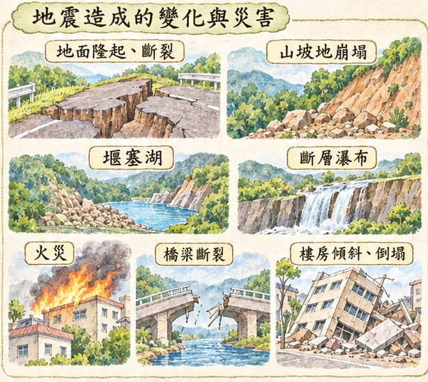
地震是自然的現象。除了風、流水的作用，強烈地震也會造成地表變動。例如民國 88 年 9 月 21 日凌晨的九二一大地震。
| 地震造成的地表變動（樣貌改變） | 地震造成的災害（危害安全） |
|---|---|
| 地面隆起、斷裂 山坡地崩塌 堰塞湖 斷層瀑布 | 引發火災 屋內物品散落一地 橋梁斷裂 樓房傾斜、倒塌 鐵軌變形彎曲 水壩破裂 |
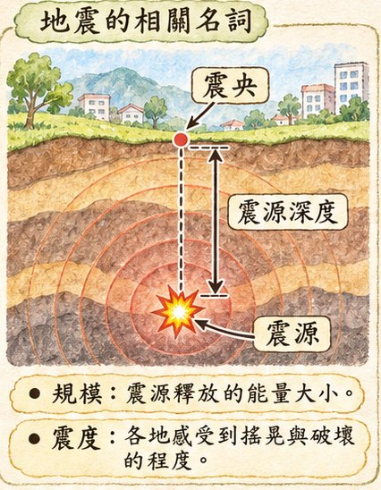
地震發生後，中央氣象署會在最快的時間內發布地震報告，讓民眾了解地震的地點及各地的震度等訊息。（想查地震資訊 → 中央氣象署網站）
| 名詞 | 說明 |
|---|---|
| 震源 | 引發地震的位置（在地底下） |
| 震央 | 震源在地表的投影，是地表最靠近震源的地點 |
| 震源深度 | 震央到震源的距離 |
| 地震規模 | 震源釋放出的能量大小。世界通用芮氏規模（ML）。一次地震只有一個規模。 |
| 震度 | 人體感受地面搖動或建築物受破壞的程度。同一次地震，各地震度可能不同。 |
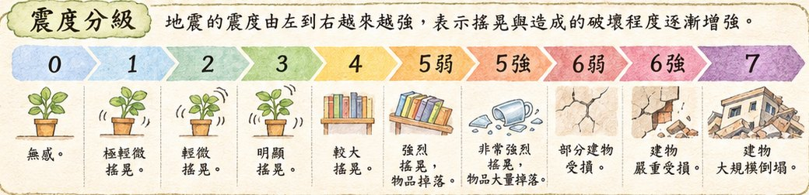
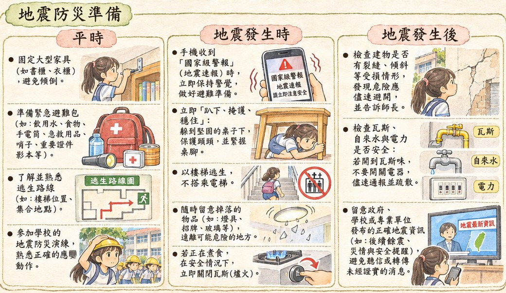
| 時間 | 該做的事 |
|---|---|
| 平時 | 釘牢櫥櫃（固定大型家具） 準備避難救生包 熟悉逃生路線圖 進行防震演練 |
| 地震發生時 | 留意手機收到的國家級警報（預測震度達 4 級） 走樓梯，不搭電梯 保護頭部（躲桌下、抓穩桌腳），注意掉落物 在戶外注意招牌或掉落物 正在烹煮食物時，立刻關閉瓦斯 |
| 地震發生後 | 檢查房屋有無龜裂 檢查瓦斯、水、電等設備 留意正確的地震消息 |
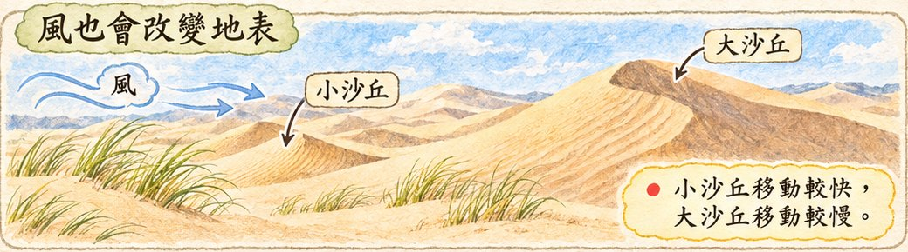
| 活動 | 要回答的問題 | 關鍵字 |
|---|---|---|
| 1 生物生存的環境都相同嗎 | 有哪些陸域、水域環境？各有什麼生物？怎麼調查水域？ | 陸域、水域、調查表 |
| 2 水生生物如何適應環境 | 水生植物、水生動物有什麼特殊構造？ | 漂浮性、沉水性、浮葉性、挺水性；鰭、鰓、蹼 |
| 3 如何愛護環境 | 環境提供什麼資源？怎麼保護水域？ | 靠山吃山、靠海吃海；熱廢水、農藥 |
自然界中有水的環境，就是水域環境。（p.39）
| 陸域環境 | 水域環境 |
|---|---|
| 高山、森林、草地 | 溪流、湖泊、水田、生態池、潮間帶、海洋 |
| 環境 | 環境特色 | 常見生物 |
|---|---|---|
| 高山（陸域） | 風大且寒冷 | 玉山圓柏、玉山箭竹、鳥類、貂 |
| 森林（陸域） | 有各種大型樹木，生物種類豐富 | 榕樹、鳥類、松鼠、蜥蜴 |
| 生態池（水域） | 水通常靜止不動、較淺，陽光可照到水底 | 睡蓮、鯉魚、龜、蛙 |
| 溪流（水域） | 水流動較快 | 苔蘚、溪魚、蝦、蟹 |
| 海洋（水域） | 最大的水域環境，生物種類很多 | 珊瑚、小丑魚、海龜、海豚 |
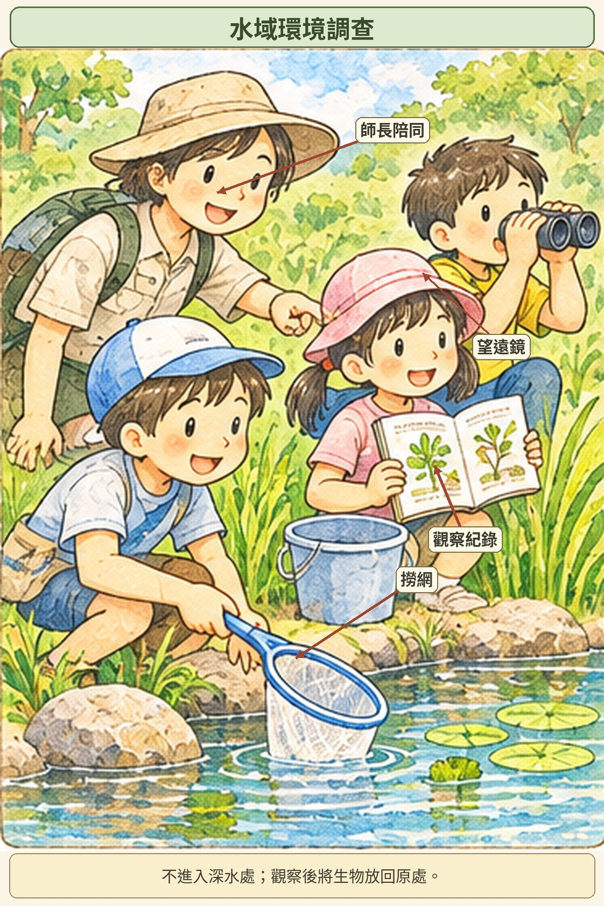
水域環境有些是天然形成，有些是人為建造（例如學校生態池、水田）。
| 要帶的物品 | 用途 |
|---|---|
| 撈網 | 採集想觀察的生物 |
| 望遠鏡 | 觀察距離較遠的生物及環境 |
| 圖鑑 | 對照及查閱水生生物資料 |
| 服裝 | 穿著適合的衣服和鞋子 |
| 水桶 | 放置水生生物（觀察完要放回） |
| 紀錄表 | 記錄觀察結果 |
調查日期／時間、天氣、調查地點、調查者，加上三個調查項目：水域類型（溪流、生態池、海洋）、水流情形（急速、緩慢、靜止不動）、水生生物（有水生植物、有水生動物），最後寫「其他發現」。
水生植物和其他植物一樣，需要爭取陽光製造養分。水生植物依生長方式，大致分為四種類型。
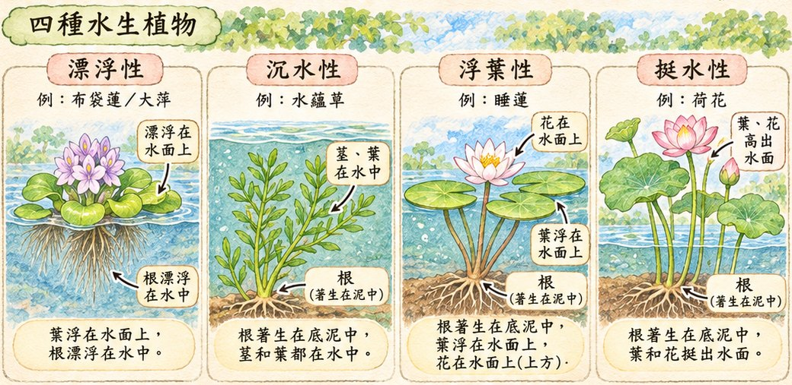
| 類型 | 根 | 葉、花 | 課本例子 |
|---|---|---|---|
| 漂浮性 | 漂浮在水裡 | 葉漂浮在水面（上） | 大萍、浮萍、布袋蓮 |
| 沉水性 | 長在水底泥土裡 | 莖和葉沉在水中 | 水蘊草（課堂補充：金魚藻） |
| 浮葉性 | 根和地下莖長在水底泥土裡 | 葉平貼在水面，花挺出水面 | 睡蓮、臺灣萍蓬草 |
| 挺水性 | 根和地下莖長在水底泥土裡 | 葉和花都挺出水面 | 荷花、香蒲 |
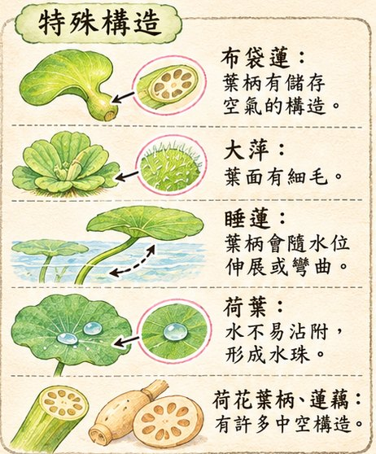
| 植物 | 實驗或觀察 | 發現（結論） |
|---|---|---|
| 布袋蓮（漂浮性） | 在水中擠壓葉柄 → 冒出氣泡 切開葉柄 → 許多孔洞 | 葉柄有儲存空氣的構造，像游泳圈，讓它漂浮在水面上 |
| 大萍（漂浮性） | 觀察葉子表面 | 葉面有細毛，讓它漂浮在水面上 |
| 水蘊草（沉水性） | 改變水族箱水位；用手輕輕撥動水 | 莖和葉柔軟且沉在水中，會隨水位高低伸展或彎曲；水位升高時跟著伸展 |
| 睡蓮（浮葉性） | 比較水位高、水位低 | 葉柄會隨水位高低伸展或彎曲，讓葉面保持平貼水面，以爭取陽光 |
| 荷花（挺水性） | ① 葉面滴水 ② 切開葉柄 ③ 切開蓮藕（地下莖） | ① 荷葉不易沾水，水會變成水珠 ②③ 葉柄和地下莖有許多中空的構造，可以儲存空氣 |
漂浮性的結論（p.53）：漂浮性水生植物有特殊構造，有的葉柄有儲存空氣的構造（布袋蓮），有的葉面有細毛（大萍），讓它們漂浮在水面上，以適應水域環境。
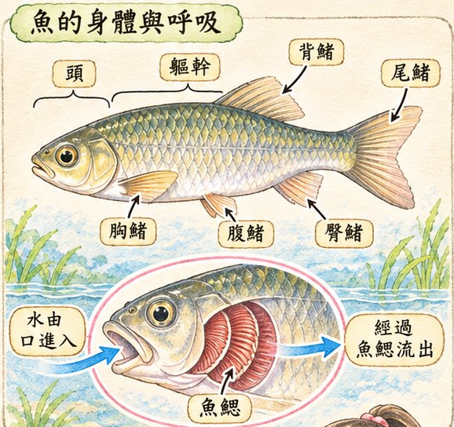
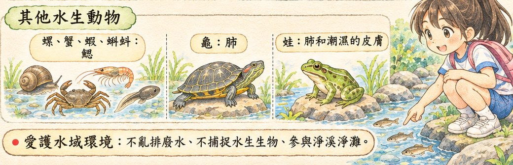
| 動物 | 外形和運動 | 呼吸 |
|---|---|---|
| 螺 | 有殼，利用腹足爬行 | 鰓 |
| 蟹 | 有八隻腳及一對螯，能在水中爬行 | 鰓 |
| 蝦 | 有好多腳，用胸足和腹足在水中步行、游水 | 鰓 |
| 蝌蚪 | 擺動尾巴在水中游動 | 鰓 |
| 龜 | 腳上有蹼，能在水中游水，也能在陸地爬行 | 肺 |
| 蛙 | 後腳粗壯，能跳躍；腳上大多有蹼，能在水中游水 | 肺和潮溼的皮膚 |
蛙是蝌蚪的媽媽，可是牠們的外形和呼吸方式完全不同：蝌蚪用鰓，蛙用肺和皮膚。
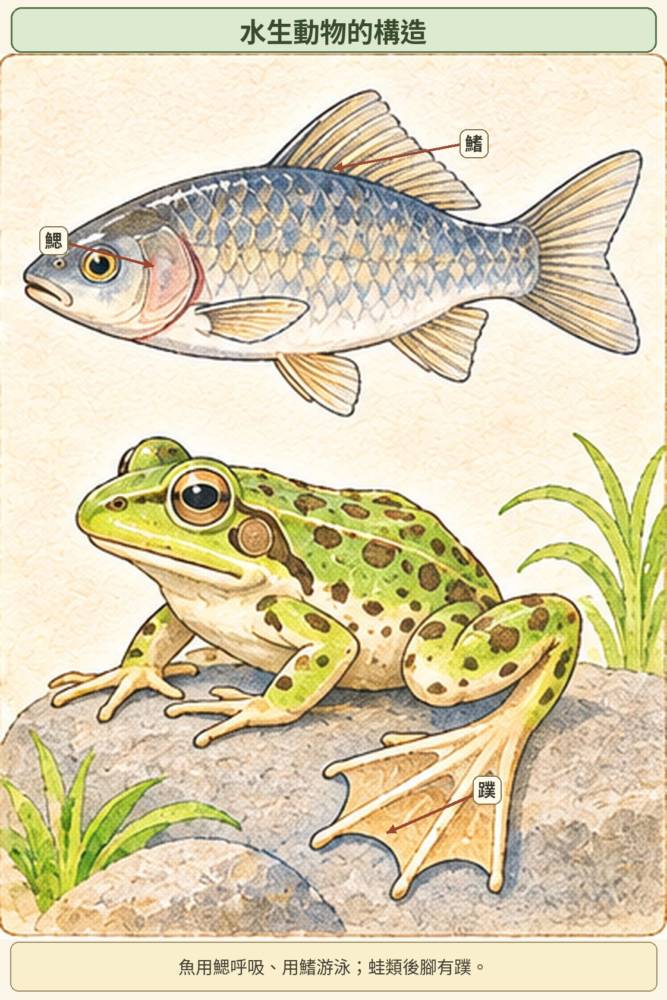
臺灣四面環海，擁有豐富、多樣的環境，為人們提供豐盛的食物（雞肉、米飯、魚肉、海帶）。「靠山吃山，靠海吃海」：環境不同，人們可使用的環境資源也不同。
| 來自山區（陸地） | 來自海邊或海洋 |
|---|---|
| 小米生長在山區，可做成小米酒 臺灣山區產茶葉，做成飲品 山野菜、小米麻糬 | 飛魚是蘭嶼重要的食物 西部海岸盛產牡蠣，造就「蚵」的美食文化（蚵仔煎） 海帶、烏魚子、花枝羹、蛤蜊湯 |
結論：不同的環境影響人類食物的種類、來源與飲食習慣。
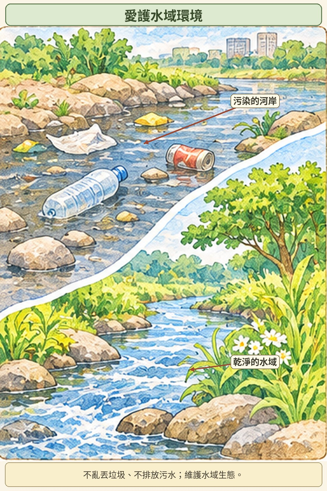
| 人類行為 | 連鎖影響 |
|---|---|
| 工廠排放熱廢水 | 附近海水溫度上升 → 附近海域珊瑚白化死亡 |
| 河川旁種蔬菜，過度使用農藥 | 農藥滲入土壤 → 下大雨時雨水把土壤沖進河裡 → 河川受農藥汙染、魚類死亡 |
水域環境是水生生物的家，我們要愛護它，讓水生生物可以永續生存。
| 水質等級 | 可見指標生物 |
|---|---|
| 乾淨、未受汙染 | 澤蟹、渦蟲 |
| 輕度汙染 | 扁泥蟲、臺灣馬口魚 |
| 中度汙染 | 大口螺、鯉魚 |
| 重度汙染 | 泥鰍、吳郭魚 |
| 活動 | 要回答的問題 | 關鍵字 |
|---|---|---|
| 1 聲音如何產生和傳播 | 聲音怎麼來？大小聲和什麼有關？怎麼傳到耳朵？ | 振動、氣體／液體／固體 |
| 2 光有什麼特性 | 為什麼看得見？光怎麼走？遇到鏡子會怎樣？ | 光源、直線行進、影子、反射 |
| 3 如何應用聲與光 | 生活中哪裡用到聲和光？ | 警示、指示、裝飾、娛樂 |
敲門、彈吉他、敲桌面、說話時摸喉嚨……都會讓物體振動。
結論：聲音是由物體振動產生的。
不同的動物會發出不同的聲音來溝通：雄蟋蟀摩擦翅膀發聲求偶；海豚利用聲音探測周圍環境、尋找食物、聯絡夥伴。
橡皮筋實驗：手把橡皮筋拉 1 公分和 4 公分再放開。拉得越長，用的力越大，橡皮筋振動越大，聲音越大。（也可以撥動尺、用大小力敲桌子看水面）
| 手拉橡皮筋 | 橡皮筋振動 | 發出聲音 |
|---|---|---|
| 1 公分 | 小 | 小 |
| 4 公分 | 大 | 大 |
結論：物體振動小，聲音較小；物體振動大，聲音較大；當物體振動停止時，聲音也會停止。
| 透過 | 課本例子 |
|---|---|
| 氣體（空氣） | 物體振動時，周圍的空氣隨著振動，把聲音傳到耳朵（鳴槍、加油聲） |
| 液體（水） | 音樂從空氣透過水傳出去，水中的舞者聽得見；海豚的聲音透過水傳播，互相溝通 |
| 固體 | 耳朵靠在桌面聽敲擊聲，和在空氣中聽起來不一樣；耳朵貼在門板聽到門外聲音；傳聲筒（紙杯＋棉線） |
太空中沒有空氣，也沒有其他可以傳播聲音的介質，實際上聽不到任何聲音。太空人必須透過電子設備才能交談。
我們能清楚看見物體，是因為物體會發光，或是有光照射在物體上。
本身能發光的物體，稱為光源，例如：太陽、點燃的蠟燭、手電筒、平板電腦螢幕。
從雲縫透出的陽光、樹林間的陽光、車燈、舞臺燈光、雷射筆的光，都是一條直線。
結論：光是直線行進的；當光被物體阻擋時，在物體的另一側會形成影子。光沒有被阻擋，就不會形成影子。
不鏽鋼杯、大樓的玻璃帷幕、平靜的水面都會反光。會反光的物體都有表面平滑、光亮的鏡面特徵。
實驗：鏡子固定在透明容器側邊 → 點燃線香讓容器充滿煙（更清楚看到光的路線）→ 雷射筆射向鏡子 → 轉動容器改變鏡子角度。
結論：光照射到鏡子時會改變行進方向，是光的反射現象。反射後的光還是直線行進；改變鏡子角度時，光的反射方向也會改變。
| 利用光反射的物品 | 用途 |
|---|---|
| 後視鏡 | 從汽車後視鏡看見後方的路況 |
| 反光鏡 | 看到岔路、轉彎處的景物 |
| 反光板 | 腳踏車加裝，增加騎乘的安全 |
| 反光桿 | 道路上提醒駕駛，避免發生危險 |
| 反光背心 | 有警示效果，保護使用者的安全（導護老師） |
利用聲音、光的特性，可以達到警示、指示、裝飾或娛樂等目的。
| 目的 | 課本例子 |
|---|---|
| 警示 | 腳踏車車鈴、一氧化碳偵測警報器、救護車警示燈 |
| 指示 | 行人穿越號誌、燈塔、路燈 |
| 裝飾、娛樂 | 聖誕燈飾、聲光玩具、熱氣球光雕音樂會 |
遙控器靠紅外線操控電器。紅外線是一種人類眼睛看不見的光，可以用來傳遞訊息。遙控器前端有一顆 LED 紅外線發射器。步驟：① 手對遙控器輸入指令 → ② 紅外線發射器發射訊號 → ③ 電器接收訊號，執行指令。使用時不能離電器太遠，也要對準電器的接收器。
我們聽到自己的聲音同時經過兩種方式：① 從嘴巴發出，經過空氣傳回耳朵；② 在體內傳播。別人聽到你的聲音只有經過空氣，所以錄音聽起來和自己聽到的不一樣。
| 活動 | 要回答的問題 | 關鍵字 |
|---|---|---|
| 1 如何讓燈泡發亮 | 電池、電線、燈泡怎麼接？哪些東西會導電？ | 正負極、通路、斷路、開關、良導體 |
| 2 電路有哪些連接方式 | 兩個電池、兩個燈泡怎麼接？亮度有什麼變化？ | 串聯、並聯 |
| 3 用電觀念知多少 | 小馬達怎麼轉？怎樣安全用電？ | 小馬達、廢電池回收、用電安全 |
手提燈籠有提把、開關、電線、燈罩，提把內裝了電池。燈籠、發光棒、會亮燈的玩具車裡面，都有燈泡、電線、電池以及開關。
| 物品 | 構造 |
|---|---|
| 電池 | 有兩極：凸起的一端是正極「＋」，平的一端是負極「－」 |
| 電線 | 外面是塑膠皮，裡面是銅線 |
| 燈泡 | 外有玻璃罩，裡面有燈絲。燈絲兩端分別連接導線，一條連到螺紋金屬體，另一條連到底部灰色的接點 |
LED 取代傳統燈泡，優點是省電、壽命長。連接時長腳接正極，短腳接負極，LED 才會發亮。使用前要注意電壓的限制。
結論：將燈泡的螺紋金屬體和接點，分別利用電線連接電池的正極、負極，形成電路通路，燈泡就會發亮。
只用一條電線也可以：把燈泡接點直接碰電池一極，螺紋金屬體用電線接另一極。
| 名稱 | 意思 | 燈泡 |
|---|---|---|
| 通路 | 當電流通過時 | 會發亮 |
| 斷路 | 電路沒有接好時，電流不能通過 | 不會發亮 |
接法正確燈泡卻不亮，可能原因：電池沒電了、電線接觸不良（還有燈泡壞掉等）。
知識庫：燈泡座和電池座，可以減少接觸不良的機率，不但方便，也能提高使用時的安全性。電池的正、負極透過金屬接點與金屬彈簧連接到電池座兩端的電線。
手電筒構造：燈泡、金屬片、塑膠開關、電池、金屬彈簧。開關內部有金屬片，打開開關會使金屬片移動，連接電路的兩端，形成通路。關上開關，燈泡就不亮。
把物品接在斷開的電線兩端，看燈泡會不會亮。例如迴紋針：會亮；橡皮擦：不會亮。
結論：連接在電路中，金屬材質的物品可以使燈泡發亮。讓電流通過的物品，是電的良導體；無法使燈泡發亮的物品，是電的不良導體。
| 良導體（燈泡會亮） | 不良導體（燈泡不亮） |
|---|---|
| 迴紋針、鋁箔紙、10 元硬幣、長尾夾的金屬部分、銅線 | 橡皮擦、紙、紙板、塑膠、布 |
用迴紋針和紙板、或迴紋針和鋁箔紙做開關，壓下或打開都能控制燈泡，因為鋁箔紙和迴紋針都是導電物品。
結論：藉由改變電路中良導體的連接或分開，可以製成開關，使電路形成通路或斷路，讓生活更便利。
| 電池串聯 | 電池並聯 | |
|---|---|---|
| 接法 | 一個電池的正極連接另一個電池的負極 | 兩個電池的正極連正極、負極連負極 |
| 燈泡亮度 | 會比較亮 | 維持原來的亮度 |
| 其他 | 遙控器、電動玩具車的電池都是用串聯 | 電力可以持續較久 |
| 燈泡串聯 | 燈泡並聯 | |
|---|---|---|
| 接法 | 用電線將兩個燈泡連接在同一個通路上 | 兩個燈泡分別和電池連接，形成不同的通路 |
| 燈泡亮度 | 亮度會減弱 | 維持原來的亮度 |
| 其他 | 其中一個燈泡壞掉，全部燈泡都不亮 | 電池電力只能持續大約一半的時間 |
電池：串聯 ＞ 並聯（電池串聯比較亮）
燈泡：並聯 ＞ 串聯（燈泡並聯比較亮）
電動玩具車、手持電風扇裡面都有小馬達。小馬達有連接電線的金屬片和轉動的軸心。
結論：小馬達兩側的金屬片分別連接電池的正極、負極，形成通路，使小馬達轉動。
應用：在紙盤上畫花紋，固定在軸心上，轉動時就能看到美麗的圖案；也能做簡易電風扇。
| 不可以 ✗ | 要做到 ✓ |
|---|---|
| 用手拉扯電線拔插頭 用潮溼的手碰觸插座 延長線同時連接太多電器 使用電器時電線捲在一起 | 隨時檢查電線的塑膠皮是否完整 使用電器時要將插頭插好 |
結論：電使我們的生活更便利，使用電器時，須注意用電安全及節約用電。
| 人物 | 做了什麼 | 主張 |
|---|---|---|
| 賈法尼（義大利醫生） | 1786 年，用金屬手術刀碰觸死掉的蛙，蛙腿竟然跳動 | 「生物電」：動物本身會產生電流 |
| 伏打（義大利科學家） | 發現要用不同的金屬接觸，蛙腿才有反應；1800 年做出世界上第一顆電池：伏打電池 | 「金屬電」：兩種不同金屬接觸而產生 |
伏打電池：把銅圓板、含食鹽水的溼抹布、鋅圓板依順序重複堆疊成圓柱狀，再用導線連接最上層的銅圓板（正極）與最底層的鋅圓板（負極），形成通路並產生電力。
| 單元 | 中文 → 英文 |
|---|---|
| 一 | 地球 Earth／the earth、地表 earth surface、物質 matter、山 mountain、岩石 rock、礫石 gravel、沙 sand、土壤 soil、流水 flowing water、穩定 stability、森林 forest、地震 earthquake、震度 earthquake intensity |
| 二 | 環境 environment、水域 aquatic、陸域 land、水生植物 aquatic plant、水生動物 aquatic animal、鰭 fin、鰓 gill、運動 movement、呼吸 respiration |
| 三 | 聲 sound、光 light、振動 vibration、（聲音的）大小 sound volume、（聲音的）傳播 transmission、光源 light source、（光的）行進 propagation／travel、影子 shadow、雷射筆 laser pointer、（光的）反射 reflection |
| 四 | 電 electricity、電路 circuit、燈泡 light bulb、電線 wire、電池 battery、通路 closed circuit、斷路 open circuit、開關 on／off、導體 conductor、串聯 series connection、並聯 parallel connection、發光二極體 light emitting diode |
| 單元 | 課本推薦 |
|---|---|
| 一 | 臺灣地形全知道、地震 100 問、臺灣地形小百科、神奇酷地理 5：翻天覆地的地震；臺北市政府消防局防災科學教育館 |
| 二 | 給小學生的環境自然課、植物，你好呀！、海洋科學探險隊 1 魚會尿床嗎？、這就是生物 3；臺北市立動物園、國立海洋生物博物館 |
| 三 | 神奇酷科學 9：驚天動地的聲音、這就是物理 6：光、這就是物理 10：聲音、瘋狂想像漫畫物理大百科 3、8；國立臺灣科學教育館、國立臺灣科學工藝博物館 |
| 四 | 科學史上最有梗的 20 堂化學課、阿德老師的科學教室、神奇酷科學 14：改變世界的電、這就是物理 1：電、瘋狂想像漫畫物理大百科 7；國立自然科學博物館 |
依據康軒版自然四上課本 p.10–131、老師講義及課堂筆記整理。